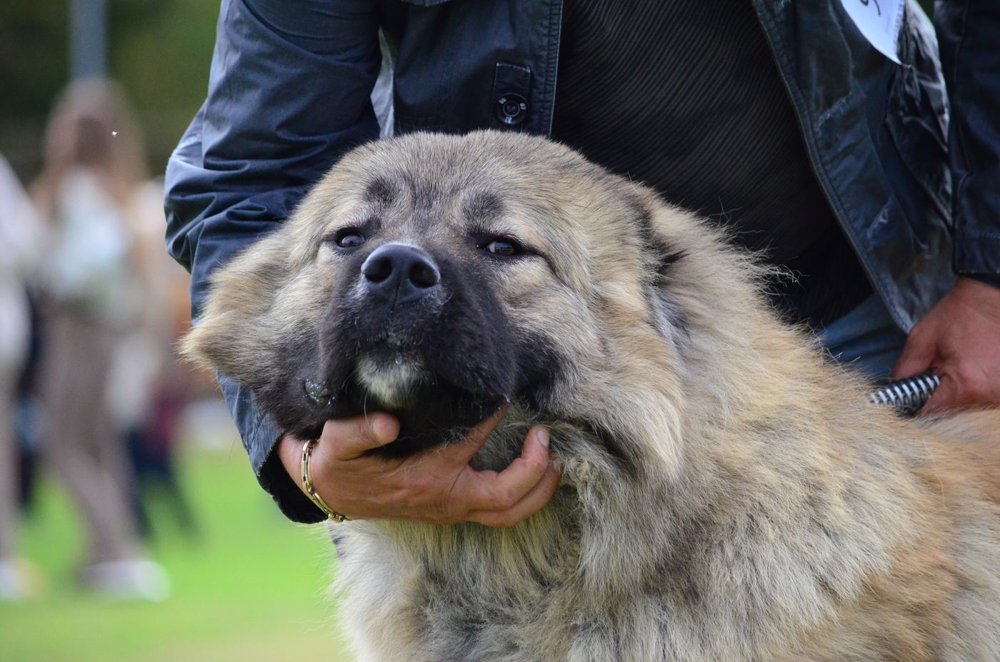

Произход

Кавказката овчарка е една от най-старите пастирски породи. Векове наред тя пази стадата и домовете на хората в планините на Кавказ – днешните Грузия, Армения, Азербайджан и Северен Кавказ – от вълци, мечки и непознати.
Суровият климат и тежката работа създават куче, което е издръжливо, непретенциозно и способно само да взема решения. Международната кинологична федерация (FCI) признава породата със стандарт № 328, а страна на стандарта е Русия.
Характер
Кавказката овчарка е уравновесена, уверена в себе си и безстрашна. Със своето семейство е спокойна и привързана, а към непознатите – недоверчива и бдителна. Това е естествен пазач, който защитава дома си без специално обучение.
Затова породата има нужда от отговорен собственик: ранна социализация, последователно възпитание и много внимание още от първите месеци.
| Група по FCI | Група 2, секция 2.2 – молоси, планински тип |
|---|---|
| Височина при холката | Мъжки – минимум 68 см Женски – минимум 64 см |
| Тегло | Мъжки – минимум 50 кг Женски – минимум 45 кг |
| Козина | Права и груба, с гъст подкосъм – дълга, средна или къса |
| Цветове | Сиви нюанси, бежово, рижаво, бяло, петнисто и тигрово |
| Продължителност на живота | 10 – 12 години |
Рекорд от нашия развъдник
Най-голямото мъжко куче кавказка овчарка в България е от Kennel Vikas-Dog.
- 116 кгтегло на кантар
- 90 смвисочина при холката
Без излишни килограми – това е масивен, но стегнат и атлетичен мъжкар.
Грижи и отглеждане
Кавказката овчарка се чувства най-добре в къща с голям и добре ограден двор. Понася отлично студа, но през лятото има нужда от сянка и много прясна вода. Гъстата козина се реши един-два пъти седмично, а по време на линеене – всеки ден.
- качествена храна, подходяща за едри породи;
- умерено, но редовно движение – разходки и свобода в двора;
- ваксинации, обезпаразитяване и редовни прегледи при ветеринар;
- ранна социализация с хора, звуци и други животни.
Породата във видео
Вижте как играят нашите кавказки овчарки – видео от YouTube канала на развъдника.